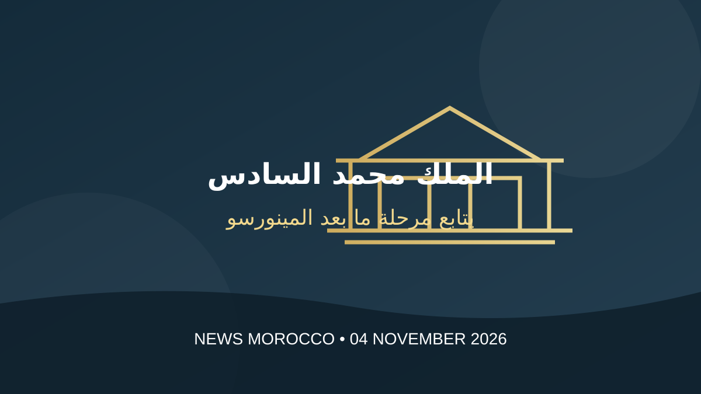

الملك محمد السادس يترأس جلسة عمل لمتابعة مرحلة ما بعد انتهاء مهام المينورسو

ترأس الملك محمد السادس، يوم الأربعاء 4 نونبر 2026، جلسة عمل بالقصر الملكي بالرباط خُصصت لمتابعة المرحلة المقبلة بعد انتهاء مهام بعثة الأمم المتحدة في الصحراء، وذلك عقب عدم تجديد مجلس الأمن الدولي لولايتها خلال اجتماعه المنعقد في 30 أكتوبر الماضي.
ووفق بلاغ الديوان الملكي، حضر الاجتماع رئيسة الحكومة فاطمة الزهراء المنصوري، ومستشار الملك فؤاد عالي الهمة، ووزير الداخلية عبد الوافي لفتيت، والفريق أول محمد بريظ، المفتش العام للقوات المسلحة الملكية وقائد المنطقة الجنوبية.
تعليمات ملكية لمواكبة انسحاب البعثة
أكد الملك خلال الاجتماع ضرورة الاحترام التام لسلامة أراضي المملكة ووحدتها وأمنها الوطني، وضمان طمأنينة المواطنين، ولا سيما سكان الأقاليم الجنوبية. كما أعطى تعليماته بالتفعيل الحازم لهذه الأولويات، كلٌّ في مجال اختصاصه.
وفي هذا السياق، كلف الملك «مكتب التنسيق مع المينورسو»، التابع لوزارة الداخلية، بمهام التنسيق ومواكبة عملية تصفية وانسحاب البعثة الأممية، والعمل على تيسير الإجراءات المرتبطة بها وضمان مرورها في ظروف سلسة ومنظمة، وبروح من المسؤولية والتعاون مع منظمة الأمم المتحدة.
استمرار المشاريع التنموية والالتزام بوقف إطلاق النار
وشدد البلاغ على مواصلة المشروع التنموي للأقاليم الجنوبية والمشاريع المهيكلة المرتبطة به، مع متابعة تطورات ملف الصحراء المغربية على مختلف المستويات، وفق الموقف الرسمي للمملكة.
كما جدد المغرب، بحسب البلاغ، التزامه التام بوقف إطلاق النار، مؤكداً أن هذا الالتزام الإرادي لن يتغير بانتهاء ولاية البعثة الأممية، إلى جانب التشبث بالالتزامات الدولية وبمقاربة دبلوماسية تقوم على الحفاظ على السلام والإسهام فيه مع صون سيادة المملكة.